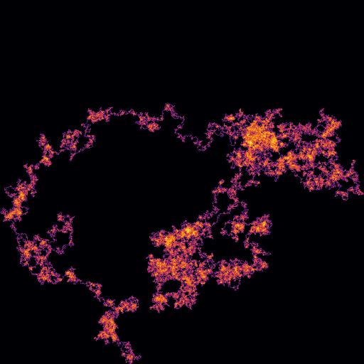
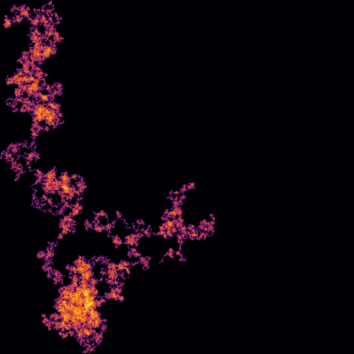

Read-only snapshot of the PiLens gallery, exported 2026-11-06 16:30. Code and how to run it yourself: github.com/fsaritome/PiLens.
walk on planted_markov_0.01, base 10, n = 100,000
Verdict: indistinguishable from random controls. p_maxT = 0.764; classifier accuracy 0.56 (chance 0.5), p = 0.224; p_lens = 0.447; q (BH over 8 lens(es) in this run) = 0.511; 500 controls.


Does this lens show anything interesting?
0👍 0👎
| metric | planted_markov_0.01 | controls mean ± sd | z | p (two-sided) |
|---|---|---|---|---|
| nu | 0.5205 | 0.4976 ± 0.019 | +1.18 | 0.202 |
| end_to_end_norm | 0.4576 | 0.9068 ± 0.492 | -0.91 | 0.379 |
| fft_slope | -2.2537 | -2.2184 ± 0.052 | -0.68 | 0.473 |
| self_intersection | 0.7466 | 0.7614 ± 0.023 | -0.66 | 0.483 |
| asphericity | 0.2771 | 0.4047 ± 0.240 | -0.53 | 0.675 |
| fft_flatness | 0.1012 | 0.1072 ± 0.012 | -0.49 | 0.593 |
| fft_peak_log10 | 4.0908 | 4.1732 ± 0.181 | -0.45 | 0.685 |
| img_entropy_bits | 1.0353 | 1.0990 ± 0.231 | -0.28 | 0.788 |
| img_compress_ratio | 0.1818 | 0.1969 ± 0.056 | -0.27 | 0.792 |
| rg_norm | 0.4239 | 0.3925 ± 0.122 | +0.26 | 0.800 |
Params: {"px": 512}. Saved 2026-11-06 09:29:32,
8s.